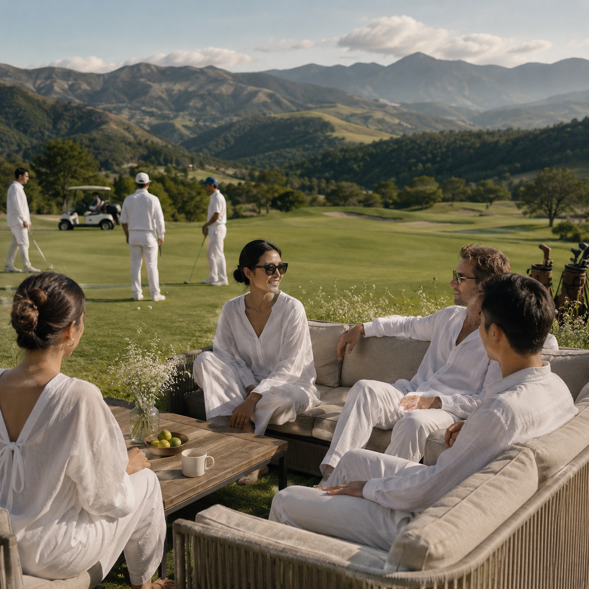
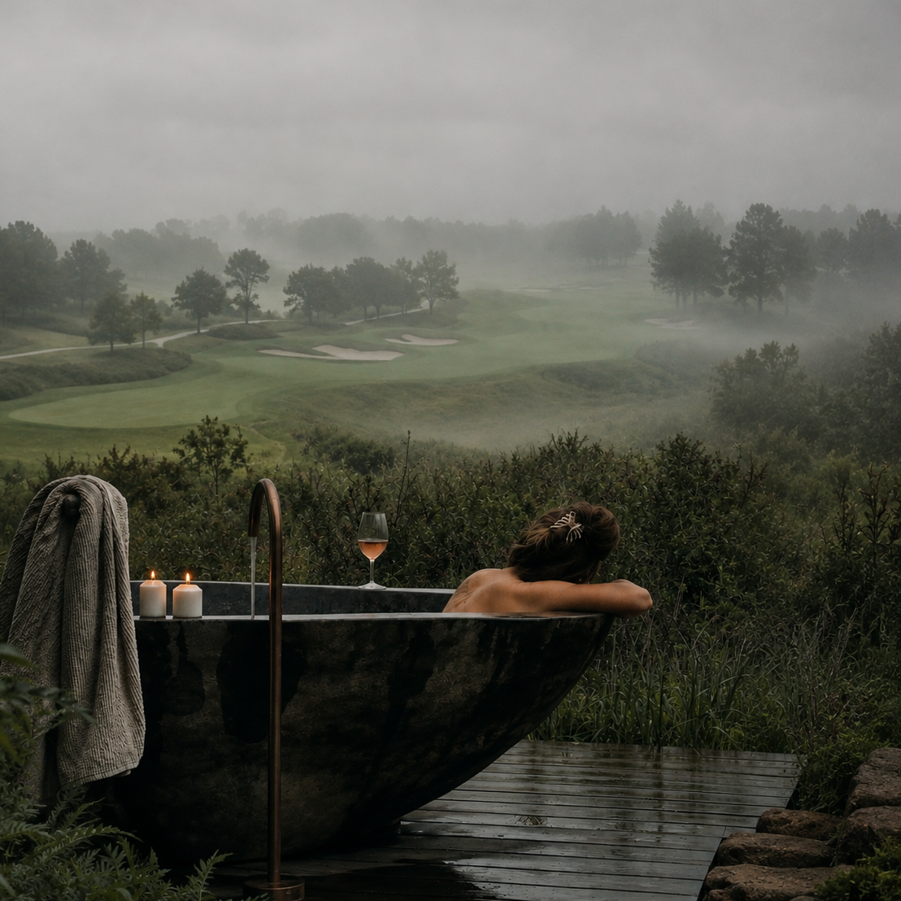

Nestled in Japan's pristine nature, Therman Wellness Resort delivers an unparalleled high-end retreat focused on mind-body rejuvenation, bespoke healing therapies, and refined Japanese hospitality.
A wellness resort held between forest, water and low mountain light — built so that rest arrives on its own, without being asked for.
THERMAN sits apart from the pace of the city, surrounded by open land, shifting light and the movement of the seasons. This sense of distance creates room to recover. With fewer sounds, interruptions and demands on attention, the body begins to settle and the mind is allowed to become quieter.
Long, low forms follow the existing land rather than competing with it.
Rooflines remain restrained, materials reflect their surroundings
and the architecture allows the landscape to continue around it.
Nature is not simply scenery at THERMAN. It is an active part of how the body rests and recovers. Natural light guides the day, fresh air invites movement and open views give the mind space to settle. Architecture, landscape and wellness are considered as one continuous environment.
The site rests where a wooded slope opens into a quiet valley, with a natural spring flowing beneath it.
Mist gathers in the early hours and lifts
with the morning light, allowing the landscape to reveal itself differently each day.
Wellness is not only stillness. The body also needs energy, play and the pleasure of moving freely. Activity at THERMAN is approached without pressure or expectation. The purpose is not simply to perform or improve, but to feel awake, capable and fully present within the surrounding landscape.

Wellness begins when urgency, unnecessary decisions and the pressure to remain productive are taken away.
What remains is time outdoors, unhurried conversation and the freedom to move through the day without expectation.
THERMAN creates space for connection as much as solitude
— for being present with yourself, with others and with nature.
At THERMAN, care is not divided between body, mind and environment. Warm water supports physical release, skilled hands respond to tension and the surrounding quiet allows attention to turn inward.
Wellbeing begins with recognising that the body does not need the same things throughout the year. Food, warmth, movement and rest change with the weather and with what the land naturally provides.
Ingredients are selected with attention to season and provenance, creating a closer relationship between nourishment, nature and place.
Movement begins with attention rather than effort. A slow stretch, a deeper breath and the feeling of the ground beneath the body can be enough.
There are no targets to reach and no performance to measure. Movement becomes a way of noticing how the body feels and responding with care.
Morning begins with natural light rather than urgency. Curtains open to the landscape, fresh air enters the room and the day is allowed to arrive gradually.
There is no immediate transition from sleep to activity. The body is given time to wake, stretch and find its own rhythm.
Spaces for gathering are placed within the landscape rather than separated from it. A circle encourages conversation without formality, while the openness around it allows silence to feel equally comfortable.
Togetherness at THERMAN is never forced. There is room to speak, listen or simply share the same view.
Supported by water, the body no longer needs to hold its full weight. Movement slows, sound becomes distant and attention returns to warmth, breath and physical sensation.
THERMAN creates the conditions for release without trying to force it. The body is allowed to soften gradually and in its own time.
Privacy at THERMAN is designed to feel protective, never isolating. There is space to withdraw completely while the landscape remains close and thoughtful care stays within reach.
Time alone becomes an opportunity to listen—to the weather, to the body and to thoughts that are usually interrupted.
Windows are designed to hold one view at a time, bringing distant weather, changing light and the movement of nature into the room.
Interiors remain calm and grounded so the world outside can feel clearer. Sightlines are carefully considered to protect privacy and reduce unnecessary visual noise.
An afternoon beside the fire. Weather moving across the landscape. A conversation that continues because there is nowhere else to be.
Nothing here needs to be completed, and nothing runs out of time. The day remains open so that rest can arrive without being scheduled.
Stone retains its natural marks, timber is finished without excessive shine and surfaces are chosen for the way they respond to touch and light.
THERMAN is designed to belong to its surroundings without disappearing into them. Warm interiors remain visible through glass, while the building sits low and composed within the landscape.
Architecture becomes a quiet presence—protective from within, restrained from a distance and connected to nature throughout the changing day.

Warm water and open air bring the body into closer contact with its surroundings. Temperature, mist and distant sound replace the usual distractions of the day.
Bathing becomes more than a private routine. It is a gradual release of physical tension and a quiet return to the body.
THERMAN does not promise transformation. It offers something quieter: the chance to remember how it feels to move without urgency, eat with attention and rest before exhaustion arrives.